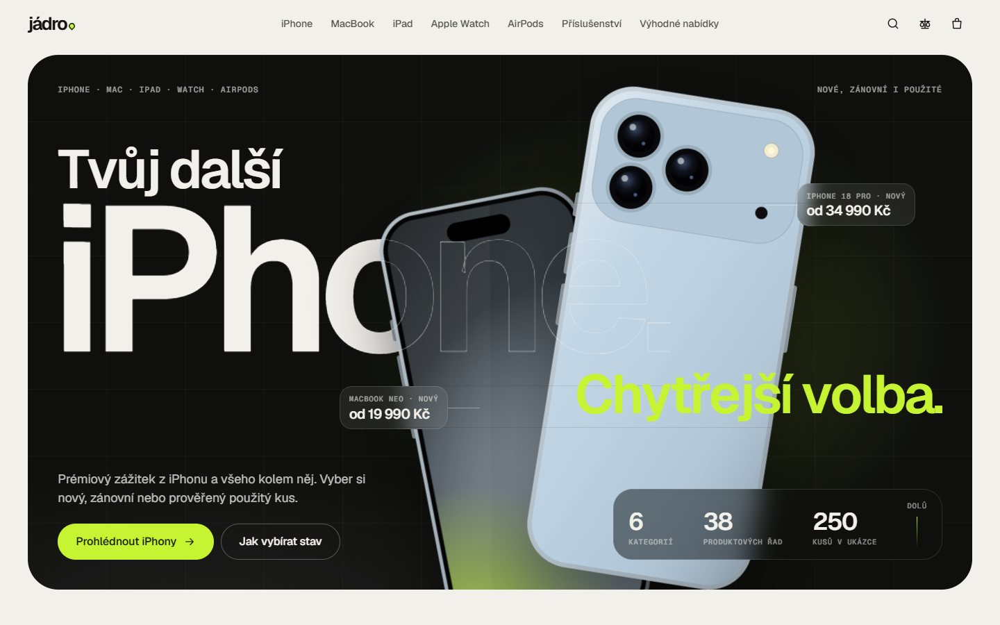

Každý návrh má vlastní písmo, barvy i nápad, na který se dá sáhnout. Ukázky jsou bez telefonů, adres a dalších kontaktů.

Hlavní návrhOtevřít e‑shop ↗Kompletní obchod s celým sortimentem Apple: iPhone, MacBook, iPad, Apple Watch, AirPods a příslušenství. Každá kategorie má vlastní filtry, detail přepočítává cenu podle výbavy, porovnat jdou tři kusy a košík si pamatuje obsah. Všechny produkty jsou kreslené přímo v kódu.